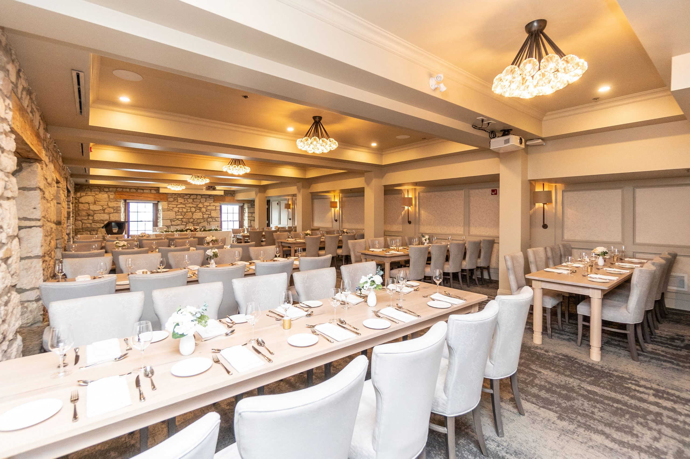

CELEBRATION PAGE IS WORK IN PROGRESS

Cambridge Mill is an upscale dining destination located on the picturesque banks of the Grand River in Cambridge, Ontario. Housed in a beautifully restored 19th-century mill, the restaurant offers a unique blend of historical charm and modern elegance. The menu features a range of dishes inspired by seasonal, locally sourced ingredients, with an emphasis on farm-to-table dining. Guests can enjoy a variety of gourmet options, including fresh seafood, prime cuts of meat, and creative vegetarian dishes, all thoughtfully prepared by the restaurant's skilled culinary team.
The ambiance at Cambridge Mill is warm and inviting, with rustic stone walls, large windows offering stunning river views, and cozy fireplaces that add to the restaurant’s charm. The service is attentive and professional, making it a popular choice for both casual dining and special occasions. The experience is both memorable and delightful.
Cambridge Mill is also a premier wedding venue, renowned for its breathtaking setting and impeccable service. The venue offers a variety of elegant event spaces.

Our reserved reception space is called the Waterfront Room and Garden Terrace. In this space heritage touches like the limestone walls, a wood burning fireplace and casement windows contribute to the allure while plush comfortable chairs and ambient lighting complete the setting. Enter the attached Garden Terrace with retractable glass walls for year round enjoyment.
For our dress code we have opted for Cocktail attire. For those travelling from Florida we understand it is difficult to travel with large suit jackets or full floor-length gowns, cocktail attire should help ease that burden. For women this means a tea-length, knee-length, or midi dress (though a dressy pantsuit is also an option). For men, most sources will say to bring a suit jacket however, for those travelling please feel free to ignore that suggestion. There is no level of colour coordination, feel free to wear whatever colour or pattern you think is fun or looks the best on you!
For more information on cocktail dress code please visit this site: link. There are many different guides and photo ideas out there and many formal attire shops will sort based on dress code.
If you are looking to instead rent your formal attire in Canada to be picked up once you get here we've listed some options below that may have just what your looking for! PLEASE NOTE: all prices on websites will be in CAD.